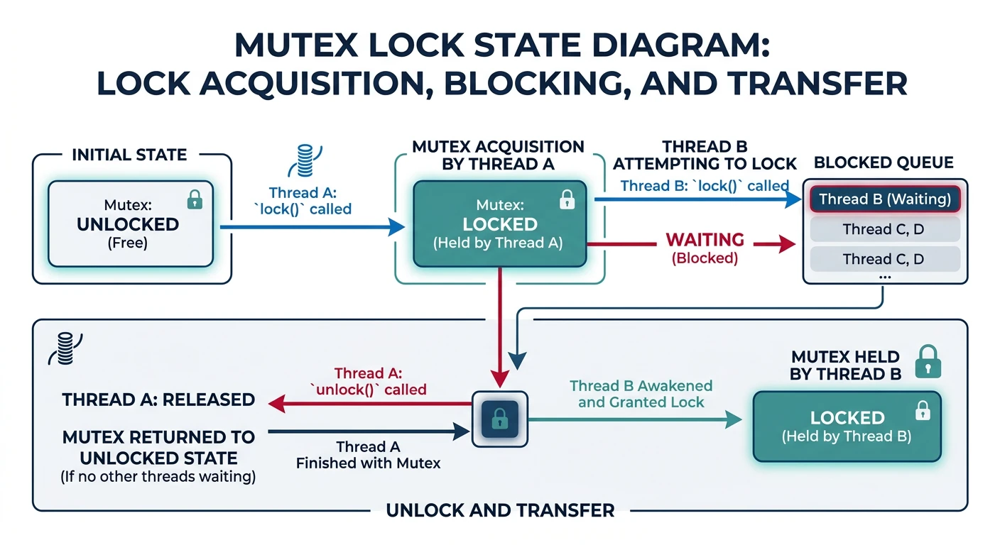
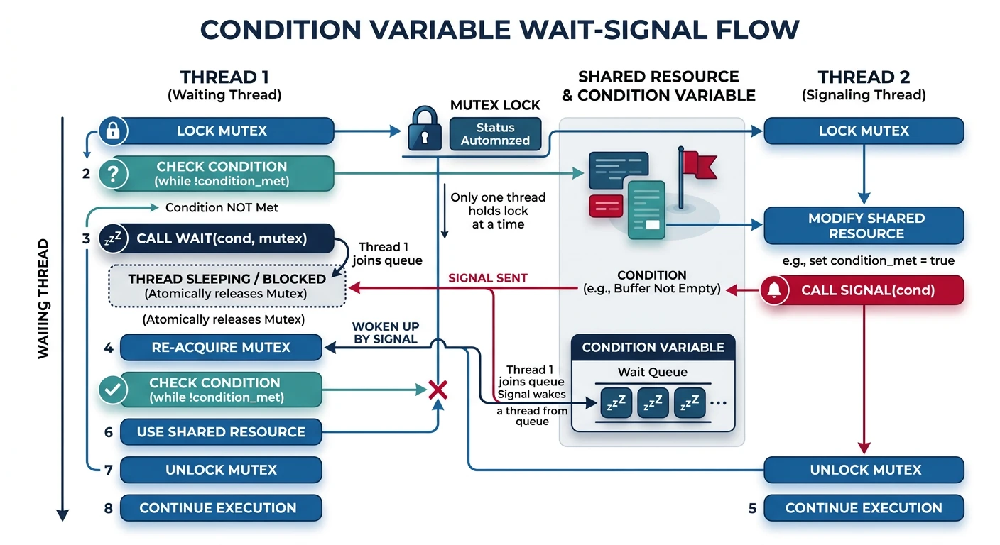
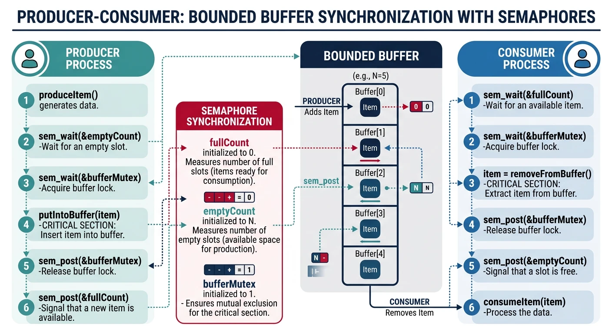

Synchronization ensures that concurrent processes or threads access shared resources safely. Without proper synchronization, race conditions lead to unpredictable behavior and data corruption.
Series Context: This is Part 12 of 24 in the Computer Architecture & Operating Systems Mastery series. Building on CPU scheduling, we now explore how to coordinate concurrent execution safely.
The Coordination Challenge: When multiple threads access shared data, how do we prevent corruption? Synchronization primitives like locks, semaphores, and condition variables provide the answer.
Critical Section Problem
A critical section is code that accesses shared resources. Only one thread should execute a critical section at a time.
The critical section problem: ensuring mutual exclusion between concurrent threads
Critical Section Requirements
Critical Section Problem:
══════════════════════════════════════════════════════════════
Thread A Thread B
━━━━━━━━━━━━━━━━━━━━━━━━━ ━━━━━━━━━━━━━━━━━━━━━━━━━
Entry Section Entry Section
┌─────────────────────┐ ┌─────────────────────┐
│ Critical Section │ │ Critical Section │
│ (access shared data)│ ✗ │ (access shared data)│
└─────────────────────┘ └─────────────────────┘
Exit Section Exit Section
Remainder Section Remainder Section
Only ONE thread in critical section at a time!
Three Requirements for a Solution:
══════════════════════════════════════════════════════════════
1. MUTUAL EXCLUSION
• If one thread is in critical section, no other can enter
• Prevents simultaneous access
2. PROGRESS
• If no thread is in critical section, a waiting thread
must be able to enter (no indefinite blocking)
• Selection cannot be postponed indefinitely
3. BOUNDED WAITING
• A thread cannot wait forever to enter
• Limit on how many times others can go first
• Prevents starvation
/* Peterson's Algorithm - Software-Only Solution */
/* Works for TWO threads only */
int flag[2] = {0, 0}; /* flag[i] = 1: thread i wants to enter */
int turn; /* Whose turn if both want to enter */
void enter_critical_section(int i) {
int j = 1 - i; /* The other thread */
flag[i] = 1; /* I want to enter */
turn = j; /* But I'll let you go first */
/* Wait if other wants to enter AND it's their turn */
while (flag[j] && turn == j) {
/* Busy wait (spin) */
}
}
void exit_critical_section(int i) {
flag[i] = 0; /* I'm done, don't want to enter */
}
/* Usage */
void thread_0() {
enter_critical_section(0);
/* ... critical section ... */
exit_critical_section(0);
}
void thread_1() {
enter_critical_section(1);
/* ... critical section ... */
exit_critical_section(1);
}
Modern CPUs Break Peterson's! Memory reordering can break software-only solutions. Modern systems need hardware support (atomic instructions) or memory barriers.
Locks & Mutexes
A mutex (mutual exclusion lock) is the fundamental synchronization primitive. Only one thread can hold the lock at a time.

Mutex lifecycle: acquire, hold, release, and thread blocking behavior
Mutex Operations:
══════════════════════════════════════════════════════════════
lock() - Acquire the mutex (block if already held)
unlock() - Release the mutex (allow another thread to acquire)
Thread A Mutex State Thread B
━━━━━━━━━━━━━━━━━ ━━━━━━━━━━━━━━ ━━━━━━━━━━━━━━━━
lock() [LOCKED by A]
lock() → BLOCKED
... critical ...
unlock() [UNLOCKED] → WAKES UP
[LOCKED by B] ... critical ...
unlock()
Hardware Support: Atomic Instructions
══════════════════════════════════════════════════════════════
Test-And-Set (TAS):
Atomically: read old value, write 1, return old value
Compare-And-Swap (CAS):
Atomically: if (value == expected) { value = new; return true; }
else { return false; }
x86 Examples:
LOCK XCHG - atomic exchange
LOCK CMPXCHG - compare and exchange
Spinlock Implementation
/* Simple Spinlock using atomic test-and-set */
#include <stdatomic.h>
typedef struct {
atomic_flag locked;
} spinlock_t;
void spinlock_init(spinlock_t *lock) {
atomic_flag_clear(&lock->locked);
}
void spinlock_acquire(spinlock_t *lock) {
/* Keep trying until we get the lock */
while (atomic_flag_test_and_set(&lock->locked)) {
/* Spin - wastes CPU cycles */
/* Better: add pause instruction for hyperthreading */
__builtin_ia32_pause();
}
}
void spinlock_release(spinlock_t *lock) {
atomic_flag_clear(&lock->locked);
}
/* POSIX Mutex (pthread_mutex) - Proper blocking mutex */
#include <pthread.h>
pthread_mutex_t mutex = PTHREAD_MUTEX_INITIALIZER;
int shared_counter = 0;
void* increment_thread(void* arg) {
for (int i = 0; i < 1000000; i++) {
pthread_mutex_lock(&mutex); /* Acquire */
shared_counter++; /* Critical section */
pthread_mutex_unlock(&mutex); /* Release */
}
return NULL;
}
/* Spinlock vs Mutex:
* - Spinlock: Busy waits, good for VERY short critical sections
* - Mutex: Blocks thread, good for longer critical sections
* - Rule: If hold time < context switch time, use spinlock
*/
Semaphores
A semaphore is a counter that controls access. Unlike mutexes, semaphores can allow multiple threads (up to N) to access a resource.
Binary semaphore (mutex-like) vs counting semaphore with P/V operations
Semaphore Operations (Dijkstra's notation):
══════════════════════════════════════════════════════════════
P(S) or wait(S): S--; if (S < 0) block();
V(S) or signal(S): S++; if (S <= 0) wake_one_waiting();
(P = "proberen" = try, V = "verhogen" = increase in Dutch)
Types of Semaphores:
━━━━━━━━━━━━━━━━━━━━━━━━━━━━━━━━━━━━━━━━━━━━━━━━━━━━━━━━━━━━
Binary Semaphore (0 or 1):
• Same as mutex
• init(1): one at a time
Counting Semaphore (0 to N):
• init(N): up to N concurrent accesses
• Example: Connection pool with 10 connections
Example: Parking Lot with 5 Spaces
══════════════════════════════════════════════════════════════
semaphore spaces = 5; /* Initialize to capacity */
car_enter():
wait(spaces); /* Decrement, block if 0 */
/* Enter and park */
car_leave():
/* Leave parking space */
signal(spaces); /* Increment, wake waiting car */
State transitions:
spaces: 5 → 4 → 3 → 2 → 1 → 0 [FULL - cars block]
↑
car leaves: signal() increments, wakes waiting car
POSIX Semaphores in C
#include <semaphore.h>
#include <pthread.h>
#include <stdio.h>
#define MAX_CONCURRENT 3
sem_t resource_sem;
void* worker(void* arg) {
int id = *(int*)arg;
printf("Worker %d: Waiting for resource...\n", id);
sem_wait(&resource_sem); /* P() - decrement or block */
printf("Worker %d: Acquired resource!\n", id);
sleep(2); /* Use resource */
printf("Worker %d: Releasing resource.\n", id);
sem_post(&resource_sem); /* V() - increment */
return NULL;
}
int main() {
pthread_t threads[10];
int ids[10];
sem_init(&resource_sem, 0, MAX_CONCURRENT);
for (int i = 0; i < 10; i++) {
ids[i] = i;
pthread_create(&threads[i], NULL, worker, &ids[i]);
}
for (int i = 0; i < 10; i++) {
pthread_join(threads[i], NULL);
}
sem_destroy(&resource_sem);
return 0;
}
Condition Variables
Condition variables let threads wait for a specific condition to become true. Always used with a mutex to protect the condition.

Condition variable workflow: wait releases mutex and sleeps, signal wakes waiting thread
Condition Variable Operations:
══════════════════════════════════════════════════════════════
wait(cv, mutex):
1. Atomically release mutex and sleep
2. When woken, re-acquire mutex before returning
signal(cv): Wake ONE waiting thread
broadcast(cv): Wake ALL waiting threads
Why needed? Avoid busy-waiting:
━━━━━━━━━━━━━━━━━━━━━━━━━━━━━━━━━━━━━━━━━━━━━━━━━━━━━━━━━━━━
BAD (busy wait):
while (!condition) {
/* Spin, wasting CPU */
}
GOOD (condition variable):
pthread_mutex_lock(&mutex);
while (!condition) {
pthread_cond_wait(&cv, &mutex); /* Sleep until signaled */
}
/* condition is now true */
pthread_mutex_unlock(&mutex);
/* Condition Variable Example: Bounded Buffer */
#include <pthread.h>
#define BUFFER_SIZE 10
int buffer[BUFFER_SIZE];
int count = 0;
pthread_mutex_t mutex = PTHREAD_MUTEX_INITIALIZER;
pthread_cond_t not_full = PTHREAD_COND_INITIALIZER;
pthread_cond_t not_empty = PTHREAD_COND_INITIALIZER;
void produce(int item) {
pthread_mutex_lock(&mutex);
while (count == BUFFER_SIZE) {
/* Buffer full - wait for consumer */
pthread_cond_wait(¬_full, &mutex);
}
buffer[count++] = item;
/* Signal consumer that buffer has data */
pthread_cond_signal(¬_empty);
pthread_mutex_unlock(&mutex);
}
int consume() {
pthread_mutex_lock(&mutex);
while (count == 0) {
/* Buffer empty - wait for producer */
pthread_cond_wait(¬_empty, &mutex);
}
int item = buffer[--count];
/* Signal producer that buffer has space */
pthread_cond_signal(¬_full);
pthread_mutex_unlock(&mutex);
return item;
}
Always Use While, Not If: Spurious wakeups can occur—threads may wake without a signal. Using while ensures the condition is re-checked after waking.
Producer-Consumer Problem
The classic synchronization problem: producers add items to a bounded buffer, consumers remove items. Must synchronize to prevent overflow and underflow.

Producer-consumer problem with bounded buffer and semaphore-based synchronization
Producer-Consumer with Semaphores
Producer-Consumer Problem:
══════════════════════════════════════════════════════════════
┌──────────┐ ┌─────────────────────┐ ┌──────────┐
│ PRODUCER │ ─→ │ BOUNDED BUFFER │ ─→ │ CONSUMER │
│ │ │ [■][■][■][ ][ ] │ │ │
└──────────┘ │ ↑ items ↑ empty │ └──────────┘
└─────────────────────┘
Synchronization needs:
1. Mutual exclusion on buffer access
2. Block producer when buffer full
3. Block consumer when buffer empty
Semaphore Solution:
━━━━━━━━━━━━━━━━━━━━━━━━━━━━━━━━━━━━━━━━━━━━━━━━━━━━━━━━━━━━
semaphore mutex = 1; /* Mutual exclusion */
semaphore empty = N; /* Empty slots (start: all empty) */
semaphore full = 0; /* Full slots (start: none full) */
PRODUCER: CONSUMER:
━━━━━━━━━━━━━━━━━━━━━━━━ ━━━━━━━━━━━━━━━━━━━━━━━━━━
while (true) { while (true) {
item = produce(); wait(full); /* ① */
wait(empty); /* ① */ wait(mutex); /* ② */
wait(mutex); /* ② */ item = buffer.remove();
buffer.add(item); signal(mutex); /* ③ */
signal(mutex); /* ③ */ signal(empty); /* ④ */
signal(full); /* ④ */ consume(item);
} }
Order matters! wait(mutex) THEN wait(empty) → DEADLOCK!
/* Complete Producer-Consumer Implementation */
#include <stdio.h>
#include <stdlib.h>
#include <pthread.h>
#include <semaphore.h>
#include <unistd.h>
#define BUFFER_SIZE 5
int buffer[BUFFER_SIZE];
int in = 0, out = 0;
sem_t mutex, empty_slots, full_slots;
void* producer(void* arg) {
int id = *(int*)arg;
for (int i = 0; i < 10; i++) {
int item = rand() % 100;
sem_wait(&empty_slots); /* Wait for empty slot */
sem_wait(&mutex); /* Enter critical section */
buffer[in] = item;
printf("Producer %d: Put %d at index %d\n", id, item, in);
in = (in + 1) % BUFFER_SIZE;
sem_post(&mutex); /* Exit critical section */
sem_post(&full_slots); /* Signal item available */
usleep(rand() % 100000);
}
return NULL;
}
void* consumer(void* arg) {
int id = *(int*)arg;
for (int i = 0; i < 10; i++) {
sem_wait(&full_slots); /* Wait for item */
sem_wait(&mutex); /* Enter critical section */
int item = buffer[out];
printf("Consumer %d: Got %d from index %d\n", id, item, out);
out = (out + 1) % BUFFER_SIZE;
sem_post(&mutex); /* Exit critical section */
sem_post(&empty_slots); /* Signal empty slot */
usleep(rand() % 150000);
}
return NULL;
}
int main() {
pthread_t prod[2], cons[2];
int ids[] = {0, 1};
sem_init(&mutex, 0, 1);
sem_init(&empty_slots, 0, BUFFER_SIZE);
sem_init(&full_slots, 0, 0);
pthread_create(&prod[0], NULL, producer, &ids[0]);
pthread_create(&prod[1], NULL, producer, &ids[1]);
pthread_create(&cons[0], NULL, consumer, &ids[0]);
pthread_create(&cons[1], NULL, consumer, &ids[1]);
for (int i = 0; i < 2; i++) {
pthread_join(prod[i], NULL);
pthread_join(cons[i], NULL);
}
sem_destroy(&mutex);
sem_destroy(&empty_slots);
sem_destroy(&full_slots);
return 0;
}
Readers-Writers Problem
Multiple readers can read simultaneously, but writers need exclusive access. How do we balance reader concurrency with writer access?
Readers-Writers Constraints:
══════════════════════════════════════════════════════════════
✓ Multiple readers can read simultaneously
✗ Only one writer at a time
✗ No readers while writing
✗ No writing while readers active
Timing Diagram:
━━━━━━━━━━━━━━━━━━━━━━━━━━━━━━━━━━━━━━━━━━━━━━━━━━━━━━━━━━━━
Reader 1: ████████████
Reader 2: ████████████████
Reader 3: ████████
Writer: ████████ (waits for readers)
Reader 4: ████████
Two Variants:
━━━━━━━━━━━━━━━━━━━━━━━━━━━━━━━━━━━━━━━━━━━━━━━━━━━━━━━━━━━━
1. Readers-Priority: Readers can starve writers
• New readers join even if writer waiting
2. Writers-Priority: Writers can starve readers
• Once writer waiting, no new readers start
3. Fair: Requests serviced in order (complex)
Readers-Writers Solution (Readers Priority)
/* Readers-Writers with Readers Priority */
#include <pthread.h>
#include <semaphore.h>
int read_count = 0; /* Number of active readers */
sem_t mutex; /* Protect read_count */
sem_t write_lock; /* Exclusive access for writing */
void reader() {
sem_wait(&mutex);
read_count++;
if (read_count == 1) {
/* First reader locks out writers */
sem_wait(&write_lock);
}
sem_post(&mutex);
/* --- Reading (shared access) --- */
printf("Reader reading...\n");
sem_wait(&mutex);
read_count--;
if (read_count == 0) {
/* Last reader allows writers */
sem_post(&write_lock);
}
sem_post(&mutex);
}
void writer() {
sem_wait(&write_lock); /* Exclusive access */
/* --- Writing (exclusive access) --- */
printf("Writer writing...\n");
sem_post(&write_lock);
}
/* Problem: Writers may starve if readers keep arriving! */
Five philosophers sit at a round table with five forks. Each needs two forks to eat. This classic problem illustrates deadlock and starvation.
The Setup
Dining Philosophers Problem:
══════════════════════════════════════════════════════════════
P0
/ \
F0 F4
/ \
P1 P4
\ /
F1 F3
\ /
P2—F2—P3
• 5 philosophers alternate between THINKING and EATING
• Need BOTH adjacent forks to eat
• Forks can only be held by one philosopher
Naive Solution (DEADLOCK!):
━━━━━━━━━━━━━━━━━━━━━━━━━━━━━━━━━━━━━━━━━━━━━━━━━━━━━━━━━━━━
void philosopher(int id) {
while (1) {
think();
pick_up(fork[id]); /* Pick left fork */
pick_up(fork[(id+1) % 5]); /* Pick right fork */
eat();
put_down(fork[id]);
put_down(fork[(id+1) % 5]);
}
}
DEADLOCK: All pick up left fork → All wait for right fork
→ No one can proceed → DEADLOCK!
Solutions to Dining Philosophers:
══════════════════════════════════════════════════════════════
1. LIMIT DINERS
• Allow at most 4 philosophers to sit at once
• Guarantees at least one can get both forks
2. ASYMMETRIC
• Odd philosophers: left then right
• Even philosophers: right then left
• Breaks circular wait
3. RESOURCE ORDERING (Best)
• Always pick up lower-numbered fork first
• Philosopher 4 picks F0 then F4 (not F4 then F0)
• Prevents circular wait
4. WAITER/ARBITER
• Central coordinator grants permission to pick up forks
• Serializes access but bottleneck
/* Dining Philosophers - Resource Ordering Solution */
#include <pthread.h>
#include <semaphore.h>
#include <stdio.h>
#include <unistd.h>
#define N 5
sem_t forks[N];
void think(int id) {
printf("Philosopher %d is thinking\n", id);
sleep(rand() % 3);
}
void eat(int id) {
printf("Philosopher %d is eating\n", id);
sleep(rand() % 2);
}
void* philosopher(void* arg) {
int id = *(int*)arg;
int left = id;
int right = (id + 1) % N;
/* Resource ordering: always pick lower-numbered fork first */
int first = (left < right) ? left : right;
int second = (left < right) ? right : left;
while (1) {
think(id);
printf("Philosopher %d wants to eat\n", id);
sem_wait(&forks[first]); /* Pick up first (lower #) */
sem_wait(&forks[second]); /* Pick up second (higher #) */
eat(id);
sem_post(&forks[second]); /* Put down second */
sem_post(&forks[first]); /* Put down first */
}
return NULL;
}
int main() {
pthread_t threads[N];
int ids[N];
for (int i = 0; i < N; i++) {
sem_init(&forks[i], 0, 1);
ids[i] = i;
}
for (int i = 0; i < N; i++) {
pthread_create(&threads[i], NULL, philosopher, &ids[i]);
}
for (int i = 0; i < N; i++) {
pthread_join(threads[i], NULL);
}
return 0;
}
Real-World Analog: Database transactions acquiring multiple locks, network protocols with bidirectional connections, or any system where processes need multiple resources. Resource ordering is a practical deadlock prevention strategy.
Conclusion & Next Steps
Synchronization is fundamental to concurrent programming. We've covered:
Key Insight: Most bugs in concurrent programs come from incorrect synchronization—race conditions, deadlocks, and starvation. Use well-tested patterns and high-level abstractions when possible!